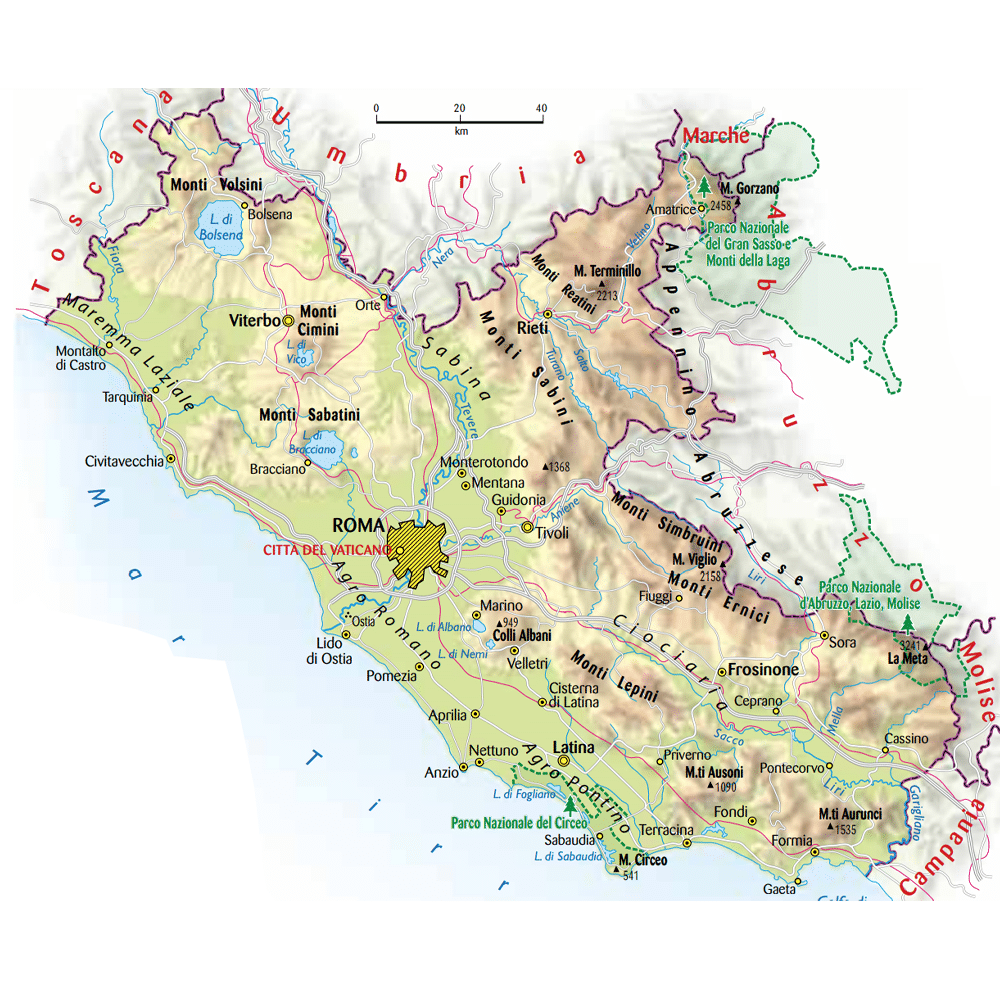
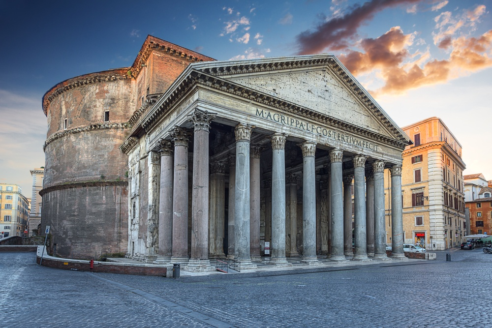

| Nome |
Lazio |
| Capoluogo |
Città metropolitana di Roma (RM) |
| Data di Istituzione |
1948 |
| Altitudine media |
416 m.s.l.m |
| Superficie |
17.242 km^2 |
| Abitanti (agosto 2023) |
5.702.068 |
| Densità |
331 ab/km^2 |
| Comuni |
378 |
| Province |
Frosinone (FR), Latina (LT), Rieti (RI), Viterbo (VT) |
| Confini |
Campania, Abruzzo, Marche, Molise, Toscana, Umbria, Città del Vaticano, Mar Tirreno |
| Patrono |
S.Pietro, S.Paolo |
| PIL procapite (2019) |
34.300€ |
Posto da visitare assolutamente: Pantheon - Roma (RM)
Il Pantheon è uno dei monumenti più iconici e ben conservati di Roma.
Situato nel cuore della città, il suo nome completo è
"Pantheon Basilica di Santa Maria ad Martyres."
Ecco alcuni dettagli significativi su questo straordinario edificio:
Origini e Costruzione:
Il Pantheon fu costruito dai romani nel 27-25 a.C. durante il regno di
Marco Vipsanio Agrippa, genero di Augusto.
L'edificio originario fu distrutto da un incendio nel 80 d.C.,
ma fu successivamente ricostruito dall'imperatore Adriano tra il 118 e il 125 d.C.
Architettura:
La struttura architettonica del Pantheon è notevole per la sua cupola
emisferica, che è una delle più grandi del mondo antico.
La cupola è sostenuta da un tamburo cilindrico e presenta un oculo aperto
(un'apertura circolare) al centro, che funge da fonte di luce naturale.
La cupola in sé è una struttura di calotta sferica in cemento,
con materiali leggeri nella parte superiore e più pesanti nella parte inferiore.
Destinazione originaria:
L'edificio fu originariamente costruito come tempio dedicato a tutti
gli dei dell'Olimpo. Il termine "Pantheon" deriva dal greco e significa
"tempio di tutti gli dei." In seguito, durante il periodo cristiano,
il Pantheon fu consacrato come chiesa cristiana.
Sopravvivenza intatta:
Una delle caratteristiche più straordinarie del Pantheon è che è
giunto fino a noi in uno stato di conservazione sorprendente,
considerando la sua età. La cupola in particolare è stata lodata
per la sua architettura innovativa e la sua stabilità strutturale.
Oculo:
L'oculo aperto al centro della cupola non solo contribuisce alla bellezza
architettonica, ma serve anche a far entrare la luce naturale all'interno del
Pantheon.
La luce solare che penetra attraverso l'oculo crea giochi di luce e
ombra unici all'interno dell'edificio.
Tombe illustri:
Il Pantheon contiene le tombe di diverse personalità illustri,
tra cui il pittore Raffaello Sanzio e i primi re d'Italia,
Vittorio Emanuele II e Umberto I.
Usi successivi:
Dopo essere stato un tempio romano e una chiesa cristiana,
il Pantheon è stato utilizzato anche come mausoleo reale durante il Rinascimento.
Oggi è una delle principali attrazioni turistiche di Roma ed è aperto al pubblico.
Evento annuale:
Ogni anno, l'oculo del Pantheon crea un effetto particolare il 21 aprile,
il giorno del compleanno di Roma.
Durante questo evento, un raggio di luce solare attraversa l'oculo e
illumina il pavimento dell'edificio.
Il Pantheon è dunque un capolavoro architettonico che continua a
suscitare ammirazione per la sua bellezza,
la sua storia e la sua capacità di resistere al trascorrere dei secoli.
